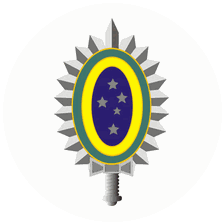

Ministério da Defesa
Forças integrantes
Cada força tem um portal próprio, com identidade institucional, unidades, escolas e informações específicas.

Exército Brasileiro
Consultar o portal específico da força, suas unidades e seus cursos.

Marinha Brasileira
Consultar o portal específico da força, suas unidades e seus cursos.

Força Aérea Brasileira
Consultar o portal específico da força, suas unidades e seus cursos.
A Polícia Militar e o Corpo de Bombeiros possuem portais próprios na FAAAB Central e não integram esta relação das três Forças Armadas.